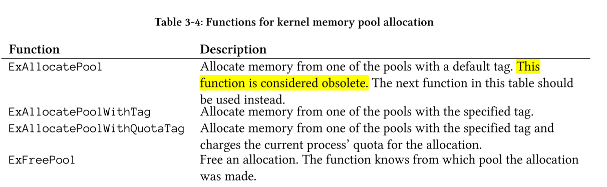

Windows内核编程03|内核编程基础
1. 内核编程一般准则
用户编程和内核编程之间的差别
1.1 未处理的异常
在用户模式下如果程序出现未处理的异常，整个程序会直接中止；在内核模式下出现未处理的异常，会造成系统奔溃，出现BSOD（蓝屏）。所以内核代码得非常小心，编译时绝对不能跳过任何细节和错误检查。
1.2 终止
当用户进程终止时不管是否正常终止，系统内核都保证了不会造成资源泄漏；但如果是内核驱动程序在卸载之后它此前所申请的系统资源不会被自动释放，只有等操作系统重启该资源才会释放。所以在编写驱动程序的时候应该妥善做好资源清理工作，自己申请的资源应该要自己释放。

1.3 函数返回值
1.4 IRQL
在用户模式代码正在运行时，IRQL（中断请求级别 Interrupt Request Level）永远是0，在内核模式下大多数时间依旧是0，但并非永远是0，具体不为0造成的影响将在第六章讨论。 如果某个Interrupt产生了，且IRQL <= 目前Processor的IRQL Setting，那么将不会影响目前程序的运行。如果IRQL > 目前Processor的IRQL Setting，将执行中断程序，总而言之，较搞优先级的Interrupt中断较低优先级的Interrupt。通过函数KeGetCurrentIRQL()可以得到目前Processor的IRQL。可用的IRQL如下：
软件IRQL(Software IRQL )
- PASSIVE_LEVEL 0 // Passive release level
- LOW_LEVEL 0 // Lowest interrupt level
- APC_LEVEL 1 // APC interrupt level
- DISPATCH_LEVEL 2 // Dispatch level 硬件IRQL(Hardware IRQL)
- DIRQL: from 3 to 26 for device ISR
- PROFILE_LEVEL 27, 0x1B // Timer used for profiling.
- CLOCK1_LEVEL 28, 0x1C // Interval clock 1 level - not used on x86
- CLOCK2_LEVEL 28, 0x1C // Interval clock 2 level
- SYNCH_LEVEL 28, 0x1C // Synchronization level
- IPI_LEVEL 29, 0x1D // Interprocessor interrupt level
- POWER_LEVEL 30, 0x1E // Power failure level
- HIGH_LEVEL 31, 0x1F // Highest interrupt level 数值越大代表其IRQL的优先级越高。在驱动开发中，常见的由以下三个
PASSIVE_LEVEL
DISPATCH_LEVEL,
DIRQL
使用SpinLock的可解決在多個驅動程式中同步的問題。DDK提供了兩組function。
KeAcquireSpinLock() KeReleaseSpinLock() 及 KeAcquireSpinLockAtDpcLevel() KeReleaseSpinLockAtDpcLevel()
1.5 内核中C++的用法
在内核中没有C++ Runtime所以一些C++的特性就没法使用：
- 不支持new和delete操作符，使用它们会导致编译失败。
- 全局变量的构造函数不是默认的构造函数，则该构造函数不会被调用（有疑问日后填坑
- C++异常处理的关键字（try,catch,throw）无法通过编译，因为这些关键字的实现需要C++ Runtime，在内核中我们只能用内核的SEH（结构化异常处理）。
- C++标准库不能在内核中使用
2 内核API
内核API大多数都在内核本身模块（NtOskrnl.exe）实现，还有一些在如HAL（hal.dll）的其他内核模块中实现。
在Ring3层，Zw 和Nt 是同一个函数，都是stub函数不做实际功能只是系统调用的入口；而在Ring0层，俩个函数是不同的函数，Zw函数很短，调用Zw函数会将PreviousMode设置成KernelMode（0），使Nt函数绕过一些安全性和缓冲区的检查。所以驱动程序最好是调用Zw 函数。
3 函数和错误代码
内核中函数的返回状态为NTSTATUS，STATUS_SUCCESS（0）表示成功，负值表示某种错误。在某些情况下从系统函数返回的NTSTATUS值最终会返回到用户模式，在用户模式我们可以通过GetLastError函数获得这些错误信息。
4 字符串
在内核API中很多地方需要用到字符串，某些地方就是简单的Unicode指针，但大多数用到字符串的函数使用的是UNICODE_STRING结构。!
typedef struct _UNICODE_STRING {
USHORT Length;
USHORT MaximumLength;
#ifdef MIDL_PASS
USHORT * Buffer;
#else // MIDL_PASS
PWCH Buffer;
#endif // MIDL_PASS
} UNICODE_STRING;
typedef UNICODE_STRING *PUNICODE_STRING;
typedef const UNICODE_STRING *PCUNICODE_STRING;
其中Length和MaximumLength是按 字节(BYTE) 为单位计算的字符串长度。
5 动态内存分配
内核的栈相当小，因此任何大块的内存都必须动态分配，内核为驱动程序提供了俩种通用的内存池。
除非必要驱动程序里要尽可能少的使用非分页池，POOL_TYPE这个枚举类型表示内存池的类型。
常见的内核内存池分配函数

6 链表
在内核中很多内部的数据结构都使用了环形双向链表，例如，系统中所有的进程使用EPROCESS结构进行管理，这些结构就用一个环形双向链表链接在一起，其中链表的头部保存在PsActiveProcessHead这个内核变量中。所有的链表都使用LIST_ENTRY结构相互链接。
LIST_ENTRY结构都是包含在一个更大的结构中，如果我们想要通过LIST_ENTRY反推它所在的父结构可以使用CONTAINING_RECORD宏（根据结构体中的某成员的地址来推算出该结构体整体的地址）
7 驱动程序对象
在驱动程序入口函数DriverEntry接收了两个参数，第一个DRIVER_OBJECT是该驱动程序的对象，这个结构由内核分配并进行了部分初始化。所以我们驱动编程人员需要进一步帮助它进行初始化，在第二章我们就设置了驱动程序Unload所需要的函数，此外一个驱动程序还需要在初始化时设置派遣函数（Dispatch Routines），它位于MajorFunction这个指针数组中，指明了驱动程序支持哪些操作。
派遣函数的设置方式
该部分可能不是很好理解，在下一章通过代码进一步学习。
8 设备对象
如果驱动想要和应用程序进行通信，首先必须要生成一个设备对象(DEVICE_OBJECT)。设备对象暴露给应用层，应用层可以像操作文件一样操作它。用于和应用程序通信的设备对象常是用来"控制"这个内核驱动，所以往往被称之为"控制设备对象”(Control Device Object, CDO)。
这个设备对象需要有一个名字，这样才会被暴露出来，供其他程序打开与之通信。但是，应用层是无法直接通过设备的名字来打开对象的，必须建立一个暴露给应用层的符号链接。符号链接是记录一个字符串对应到另一个字符串的简单结构，可以和文件系统的快捷方式类比。
9 内核开发注意事项
- 一定不要在没有标注 I/O 请求数据包 (IRP) 挂起 (IoMarkIrpPending) 的情况下通过调度例程返回 STATUS_PENDING。
- 一定不要通过中断服务例程 (ISR) 调用 KeSynchronizeExecution。 它会使系统死锁。
- 一定不要将 DeviceObject->Flags 设置为 DO_BUFFERED_IO 和 DO_DIRECT_IO。 它会扰乱系统并最终导致致命错误。 而且，一定不要在 DeviceObject->Flags 中设置 METHOD_BUFFERED、METHOD_NEITHER、METHOD_IN_DIRECT 或 METHOD_OUT_DIRECT，因为这些值只在定义 IOCTL 时使用。
- 一定不要通过页面缓冲池分配调度程序对象。 如果这样做，将会偶尔导致系统故障检测 (Bugcheck)。
- 当运行于 IRQL >= DISPATCH_LEVEL 时，一定不要通过页面缓冲池分配内存，或访问页面缓冲池中的内存。 这是一个致命错误。
- 一定不要在 IRQL >= DISPATCH_LEVEL 上等候核心调度程序对象出现非零间隔。 这是一个致命错误。
- 在 IRQL >= DISPATCH_LEVEL 上执行时，一定不要调用任何导致调用线程发生直接或间接等待的函数。 这是一个致命错误。
- 一定不要把中断请求级别 (IRQL) 降低到低于您的顶级例程被调用的级别。
- 如果没有调用过 KeRaiseIrql()，则一定不要调用 KeLowerIrql()。
- 一定不要使处理器 (KeStallExecutionProcessor) 停止运转的时间超过 50 微秒。
- 一定不要使旋转锁 (Spin Lock) 保持锁定状态的时间超过您的需要。 要使系统获得更好的总体性能，请不要使任何系统范围内有效的旋转锁的锁定时间超过 25 微秒。
- 当 IRQL 大于 DISPATCH_LEVEL 时，一定不要调用 KeAcquireSpinLock 和 KeReleaseSpinLock，或 KeAcquireSpinLockAtDpcLevel 和 KeReleaseSpinLockFromDpcLevel。
- 一定不要通过调用 KeReleaseSpinLockFromDpcLevel 来释放 KeAcquireSpinLock 所获取的旋转锁，因为这会使原始 IRQL 无法被还原。
- 一定不要在 ISR 或 SynchCritSection 例程中调用 KeAcquireSpinLock 和 KeReleaseSpinLock 或者其它任何使用可执行旋转锁的例程。
- 当您在例程中而不是在 DriverEntry 中创建设备对象时，一定不要忘记清除 DO_DEVICE_INITIALIZING 标记。
- 一定不要同时在不同处理器的多个线程中将延时过程调用 (DPC) 对象添加到队列中（使用 KeInsertQueueDpc）。 这会导致致命错误。
- 一定不要通过 CutomerTimerDPC 例程释放周期定时器。 您可以通过 DPC 例程释放非周期定时器。
- 一定不要将相同的 DPC 指针传递给 KeSetTimer，或者 KeSetTimerEx (CustomTimerDpc) 和 KeInsertQueueDpc (CustomDpc)，因为这将导致竞争。
- 旋转锁锁定时，一定不要调用 IoStartNextPacket。 这将使系统死锁。
- 旋转锁锁定时，一定不要调用 IoCompleteRequest。 这将使系统死锁。
- 如果您的驱动程序设置了完成例程，那么一定不要在没有把完成例程设置为 NULL 的情况下调用 IoCompleteRequest。
- 调用 IoCompleteRequest 之前，一定不要忘记设置 IRP 中的 I/O 状态区。
- 在将 IRP 添加到队列中或将它发送到另一个驱动程序 (IoCallDriver) 之后，一定不要调用 IoMarkPending。 在驱动程序调用 IoMarkPending 之前，IRP 可能已经完成，由此可能发生故障检测。 对于包含完成例程的驱动程序，如果设置了 Irp->PendingReturned，则完成例程必须调用 IoMarkPending。
- 一定不要在已经对某个 IRP 调用 IoCompleteRequest 之后再去访问该 IRP。
- 一定不要对不属于您的驱动程序的 IRP 调用 IoCancelIrp，除非您知道该 IRP 还没有完成。
- 在您的调度例程返回到调用者之前，一定不要对您的调度例程正在处理的 IRP 调用 IoCancelIrp。
- 一定不要从中间驱动程序调用 IoMakeAssociatedIrp 来为较低的驱动程序创建 IRP。 在中间驱动程序中所获得的 IRP 可能是已被关联的 IRP，而您不能将其它 IRP 关联到已经被关联的 IRP。
- 一定不要对使用缓冲 I/O 而设置的 IRP 调用 IoMakeAssociatedIrp。
- 一定不要简单地将指向设备 I/O 寄存器的虚拟指针解除引用并访问这些指针。 始终使用正确的硬件抽象层 (HAL) 函数来访问设备。
- 如果 IRP 或设备对象可能在 DISPATCH 级别被修改，那么一定不要通过 ISR 来访问 它。 在对称多处理器系统中，这会造成数据损坏。
- 正在高级 IRQL 中运行时，如果数据可能被低级 IROL 代码写入，那么一定不要修改该数据。 应当使用 KeSynchronizeExecution 例程。
- 在获取系统范围的取消旋转锁 (IoAcquireCancelSpinLock) 之前，一定不要在您的 DispatchCleanup 例程中获取驱动程序自己的旋转锁（如果有的话）。 要避免可能出现的死锁，一定要在驱动程序中遵循一致的锁定获取层次结构。
- 一定不要在取消例程中调用 IoAcquireCancelSpinLock，因为该例程被调用时已经获取了系统级的取消旋转锁。
- 在从取消例程返回之前，一定不要忘记调用 IoReleaseCancelSpinLock。
- 一定不要使用基于 IRQL 的同步，因为它只对单处理器系统有效。 提高单处理器上的 IRQL 将不会掩蔽在其它处理器上的中断。
- 一定不要对重叠的内存地址范围使用 RtlCopyMemory。 应当使用 RtlMoveMemory。
- 一定不要假定页面大小是常量，即使是用于给定的 CPU。 为了保持可移植性，应当使用 PAGE_SIZE 以及在头文件中所定义的其它页面相关常量。
- 一定不要从引导\系统初始化阶段加载的驱动程序的 DriverEntry 例程中访问除 Registry\Machine\Hardware 和 Registry\Machine\System 以外的任何注册表项。
- 一定不要为了加载驱动程序而在驱动程序的注册表项 (Registry\Machine\System\CurrentControlSet\Services) 下创建 Enum 项。 系统将动态地创建该项。
- 如果没有先在注册表中申请必需的与总线相关的 I/O 端口、内存范围、中断或直接内存访问 (DMA) 通道/端口等硬件资源，一定不要初始化物理设备。
- 一定不要在您的 DriverEntry 例程调用 IoRegisterDriverReinitialization，除非重初始化例程返回了 STATUS_SUCCESS。
- IRQL 为 PASSIVE_LEVEL 时，一定不要从被页面调度的线程或驱动程序例程中在 Wait 参数被设置为 TRUE 的情况下调用 KeSetEvent。 如果碰巧在调用 KeSetEvent 和 KeWait..Object(s) 之间您的例程被页面调度出去，这类调用就会导致致命的页面错误。
- 与上例相同的条件下，同样不能调用 KeReleaseSemaphore 。
- 与上例相同的条件下，同样不能调用 KeReleaseMutex 。
- 一定不要通过零售的 Windows NT 驱动程序调用 KeBugCheckEx 或 KeBugCheck 来停止系统的运行，除非您遇到的是破坏系统内存并最终导致系统进入故障检测的重要错误。 应当始终巧妙地处理错误条件。
- 一定不要假定 IoTimer 例程将会准确地在一秒边界处被调用，因为任何特定 IoTimer 例程的调用间隔最终取决于系统时钟。
- 一定不要从核心模式的设备驱动程序调用 Win32 应用程序编程接口 (API)。
- 一定不要使用会导致堆栈溢出的递归函数，因为调用线程的核心模式堆栈不能动态增长。
- 在处理多个中断的 ISR 例程中，一定不要使用中断对象指针 (PKINTERRUPT) 来标识中断，因为您在 ISR 中所获得的中断对象地址不会始终与您通过 IoConnectInterrupt 所获得的地址相同。 要想识别当前发生中断的设备，应当仅使用您在 IoConnectInterrupt 中所指定的 ServiceContext 值。
- 如果没有清零 CustomTimerDpc (KeCancelTimer)，一定不要卸载驱动程序。 如果在卸载驱动程序后启动 DPC，它可能调用不存在的代码，并导致系统进入故障检测查。
- 如果 IRP 中设置了某个驱动程序的 I/O CompletionRoutine，那么一定要等到所有这些 IRP 完成之后，才能卸载该驱动程序。 如果卸载驱动程序后，IRP 被更低级的驱动程序完成，那么系统会试图执行不存在的代码，并导致系统崩溃。
- 一定要等到驱动程序准备好要处理某个设备中断时，才能启用该设备中断。 应当只在完成驱动程序初始化之后才启用它，执行 ISR 和 DPC 时，系统才能安全的访问设备对象的若干私有成员。
- 在旋转锁锁定时，一定不要调用驱动程序以外的代码，因为这会引起死锁。
- 如果您的驱动程序通过 IoBuildAsynchronousFsdRequest/IoAllocateIrp 创建了一个 IRP，那么，一定不要从您的 I/O CompletionRoutine 为这个 IRP 返回 STATUS_MORE_PROCESSING_REQUIRED 以外的任何状态，因为该 IRP 没有为与完成有关的 I/O 管理器的处理后工作做好准备。 这样的 IRP 应当被驱动程序显式地释放 (IoFreeIrp)。 如果本来没有打算重用 IRP，可以在返回状态 STATUS_MORE_PROCESSING_REQUIRED 之前，在 CompletionRoutine 中将它释放。
- 一定不要在任意的线程上下文中使用 IoBuildSynchronousFsdRequest/IoBuildDeviceIoControlRequest 来分配 IRP，因为该 IRP 依然与该线程保持关联 (Irp->ThreadListEntry)，直到它被释放。
- 如果已经使用 IoAllocateIrp 在 ChargeQuota 参数被设置为 TRUE 的情况下分配了某个 IRP，那么一定不要对该 IRP 调用 IoInitializeIrp。 如果在 ChargeQuota 设置为 TRUE 的情况下分配 IRP，则 I/O 管理器将把它为该 IRP 分配内存时所用的缓冲池的相关信息保存在该 IRP 的内部标记中。
如果对这样的 IRP 调用 IoInitializeIrp，那么，当该函数盲目地清零整个 IRP 时，分配池信息将会丢失。 当您释放 IRP 时，这将导致内存被破坏。 同时，一定不要重用来自 IO 管理器的 IRP。 如果要重用 IRP，应当使用 IoAllocateIrp 分配您自己的 IRP。 57. 如果在调用线程的堆栈中分配了对象，就一定不要在 KeWaitForSingleObject/KeWaitForMultipleObjects 中将 WaitMode 指定为 UserMode。 这样做的结果是，如果被等候的对象是在函数堆栈中创建的，那么您必须将 WaitMode 指定为 KernelMode 才能防止线程被页面调度出去。 58. 在没有对关键节中的代码加以保护的情况下，一定不要在用户模式线程的上下文中获取诸如 ERESOURCES 和 FastMutex(Unsafe) 这类资源。
因为获取这些资源不会使 IRQL 提高到 APC_LEVEL，所以，如果线程在已获取资源后被挂起（通过将 APC 加入队列实现），它可能导致死锁，并使系统安全性降低。 因此，应当通过显式地将 IRQL 提高到 APC_LEVEL，或者调用 KeEnterCriticalRegion 来进入关键段，然后可以获取这些资源
- 原文作者：Binean
- 原文链接：https://bineanju.gitee.io/blog/post/20191229WindowsKernelPrograming03KernelBasic/
- 版权声明：本作品采用知识共享署名-非商业性使用-禁止演绎 4.0 国际许可协议进行许可，非商业转载请注明出处（作者，原文链接），商业转载请联系作者获得授权。